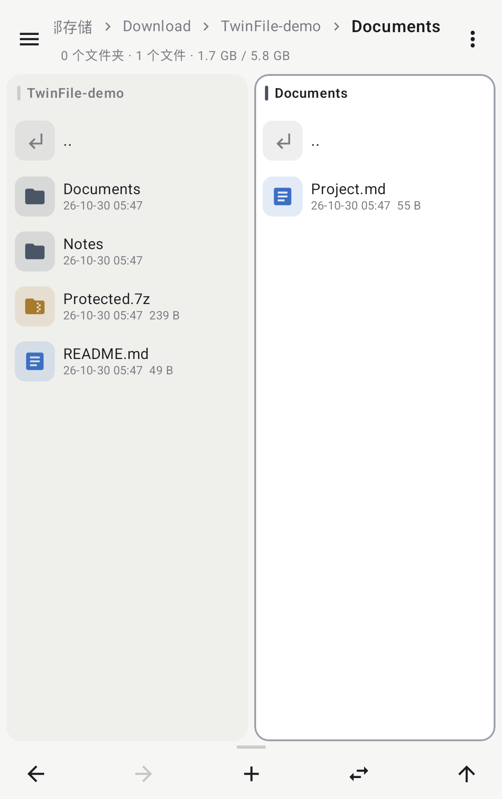
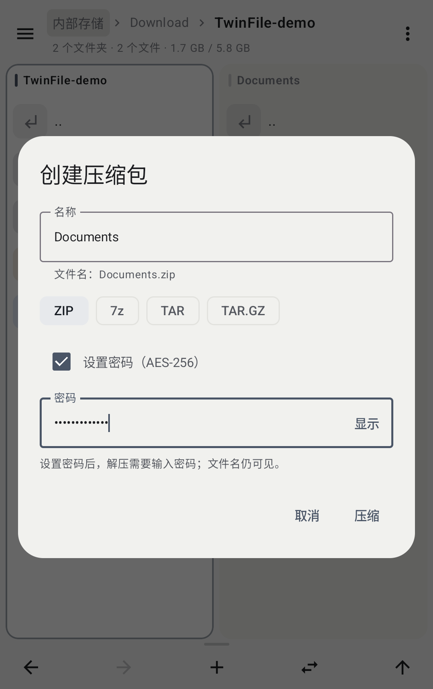
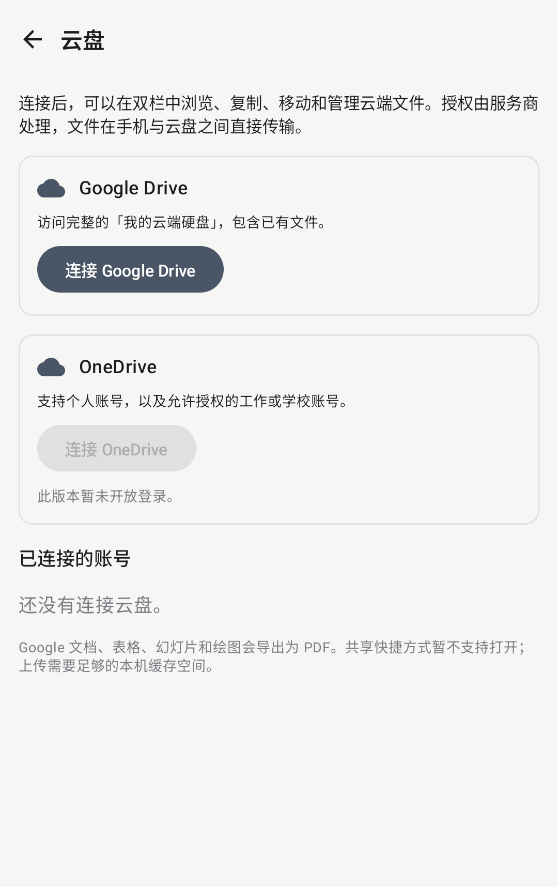

本地文件与压缩
复制、移动、重命名、查看文本与图片。支持 ZIP、7z、TAR 和 TAR.GZ，ZIP 可使用 AES-256 密码加密。
ANDROID / OPEN SOURCE / MIT
TwinFile 是开源、免费的 Android 双栏文件管理器。支持本地存储、网络共享与已授权云盘的统一浏览和文件操作。
Android 8.0 及以上 · 无广告、无应用内统计
版本说明 · SHA-256 校验和

FILE MANAGEMENT
左右窗口支持独立导航、文件选择与排序，使用一致的操作方式管理手机存储、NAS 共享、已配对电脑和已授权云盘。
复制、移动、重命名、查看文本与图片。支持 ZIP、7z、TAR 和 TAR.GZ，ZIP 可使用 AES-256 密码加密。
支持 FTP、FTPS、SFTP、SMB 和 WebDAV。配合 SyncBoard，可管理你已配对的电脑文件。
通过 Google 原生授权访问“我的云端硬盘”，浏览、上传、下载、新建、重命名、移动和移入回收站。

ARCHIVE & ENCRYPTION
创建 ZIP、7z、TAR 和 TAR.GZ/TGZ。ZIP 可设置 AES-256 密码；解压支持 ZipCrypto/AES ZIP 和带密码的 7z。
支持直接浏览 ZIP 内容，并将压缩包解压到当前目录或另一栏。智能解压根据顶层结构保留单一目录或创建归档目录，避免重复嵌套和文件散落。
ZIP 加密保护文件内容，文件名仍可见。当前 7z 创建不提供密码；RAR 解压尚未支持。
查看格式与兼容性说明 ↗LOCAL / NETWORK / CLOUD
在本地、网络共享、已配对电脑与已授权云盘之间复制或移动。耗时任务显示进度，并支持取消。
云盘上传需要本机缓存空间。Google 共享云端硬盘、跨 drive 快捷方式暂未接入。

图片缩放、文本与 Markdown 预览，滑动多选、自然排序、隐藏文件和书签。
提供复制进度、同名冲突处理、任务取消和文件校验值计算。
浅色与深色、主题色、Android 壁纸取色、紧凑列表和可关闭的目录动画。
GETTING STARTED
点击“下载最新 APK”会从 GitHub Releases 下载正式签名的安装包。Android 会要求你允许当前浏览器或文件管理器安装应用。应用内可检查更新；你也可以关闭自动检查，并自行下载更新。保留签名一致的正式版即可覆盖安装。
不需要。按提示授予文件访问权限即可使用本地功能。只有主动连接云盘时才需要 Google 或 Microsoft 授权。
当前 OAuth 公开验证尚未完成。测试状态下，仅 Google 控制台允许的测试账号可以授权。公开发布 APK 不会自动解除 Google 的访问限制；开发者正在准备品牌与权限审核资料。
填写具体共享，例如 /Public 或 /Public/文档。当前不支持自动发现共享名。还需要确认服务器权限、局域网访问和账号配置。
TwinFile 没有接收文件的自有后端。云盘传输直接访问服务商；你选择复制到其他网络位置或外部应用时，文件会发送到该目标。账号与缓存等处理详见隐私政策。
由 Copy Lee（GitHub：copylee711）维护。遇到问题可发送邮件至 copylee711@gmail.com，或在 GitHub Issues 提交反馈。请勿在公开问题中附上密码、令牌或私人文件。